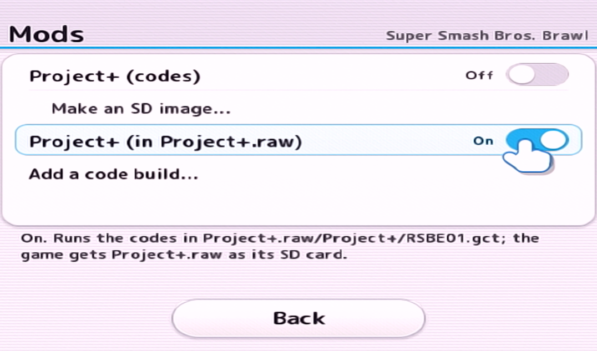
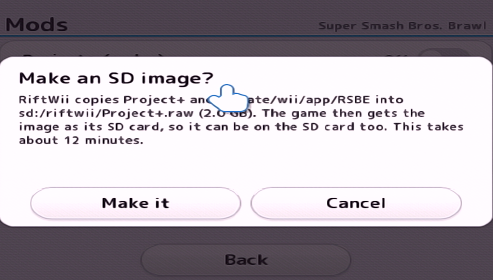

← Back to RiftWii
VIRTUAL SD CARD SETUP
Using and Installing Virtual SD Cards
You might be thinking, why on earth would I need a virtual SD Card on my very non-virtual, physical SD Card. Well, I'm glad you asked. There are tons of great reasons to doing this!
- You can use physical SD Cards with more than 32GB for Gecko Code Mods (like Project+, REX, etc.)
- Mods can be stored on USB Drives as well
- It's now easier to have multiple modpacks on your device without constantly swapping files out
Now before we start, there are multiple ways to do this, either with SD RAWR, or with RiftWii, so I'll just give you a table to compare them yourself:
| SD RAWR |
RiftWii |
| Requires ImDisk and Windows to use |
Drag and drop, all done on your Wii |
| More functionality and options to manage, edit, and create Virtual SD Cards |
Only builds the Virtual SD Card |
| Fast at creating virtual SD Cards (depending on your PC specs) |
Quite slow and can take a very long time at larger mods |
Use SD RAWR
Use RiftWii
SD RAWR
Using SD RAWR
This section teaches you how to install Virtual SD Cards with SD RAWR
Step 2
Next, put all the contents you want into a parent folder by itself:
For example:
Project M SD Card
/codes
- RSBE01.GCT
projectm
Step 2
Open SD RAWR and under "Create Virtual SD", choose the directory of your parent folder, in my example, its Project M SD Card.

Step 3
Choose a name, size, and output folder for your Virtual SD Card.
Note: If your drive is formatted to FAT32, select split final RAW into 4000MiB, otherwise your Virtual SD Card might be too big for your device.
Step 4
Copy your output .raw file into the /riftwii folder on the same device you have your wbfs files. It should look like:
wbfs
/riftwii
projectm.raw
If SD RAWR split your virtual SD card, copy all the .raw.001, .raw.002, etc. files in teh same way. It should look like:
wbfs
/riftwii
projectm.raw.001
projectm.raw.002
etc.
Step 5
Launch RiftWii and go to your mods, and turn on the mod you created in the Virtual SD Card

Step 6 - Launch and Play
Go back and start the game. Enjoy!

RIFTWII
Using RIFTWII
This section teaches you how to install Virtual SD Cards with RiftWii
Step 1
Put your mod files onto the root of your SD Card. It should look like:
/apps
/codes
/[MOD NAME FOLDER]
Note: It has to be on the SD Card or your mod will not work.
Step 2
Launch RiftWii, and choose mods. Then select Make an SD image.... When it finishes scanning, click Make.(Be patient as it can take over 30 minutes depending on your mod!)

Step 3
Launch RiftWii and go to your mods, and turn on the mod you created in the Virtual SD Card
Step 4 - Launch and Play
Go back and start the game. Enjoy!